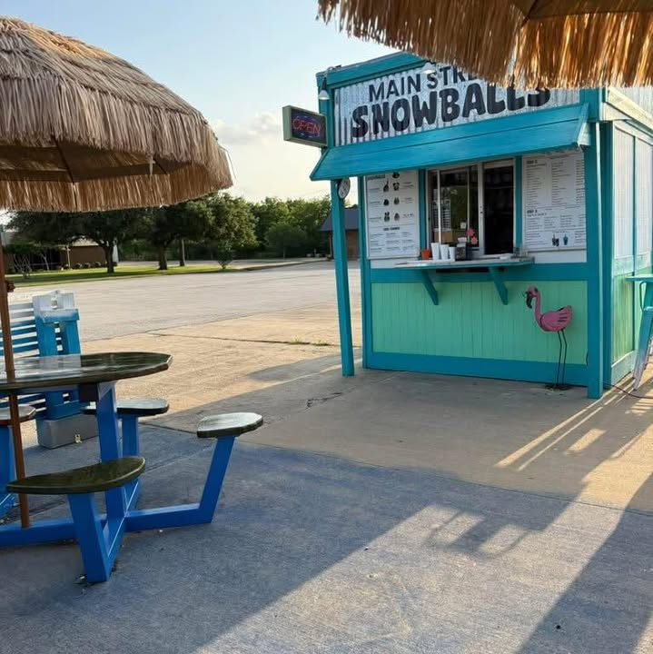
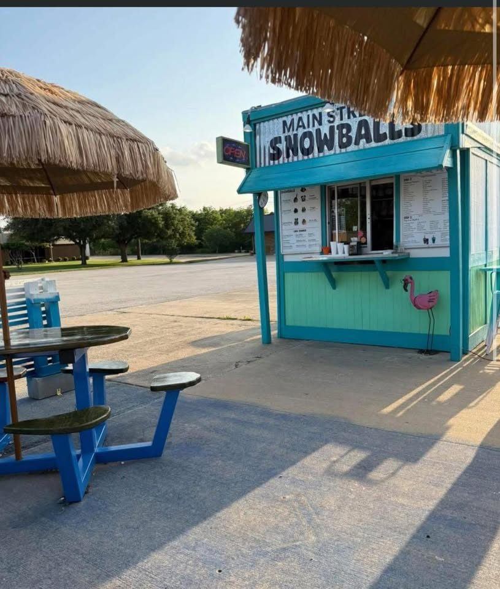

For over 40 years this little shaved ice hut has served Keller families. Fine, snow-soft ice, tons of flavors, sugar-free and dye-free options, and yard games while you wait.

Reviewers love that there are games out for the kids and tables to play at while the snowballs are made. Family owned, right on N Main St.

Fri 5 – 9 PM
Sat 1 – 9 PM
Sun 1 – 8 PM
per public listing; confirm current seasonal hours
301 N Main St
Keller, TX 76248
(817) 874-2368
snowballskeller@gmail.com